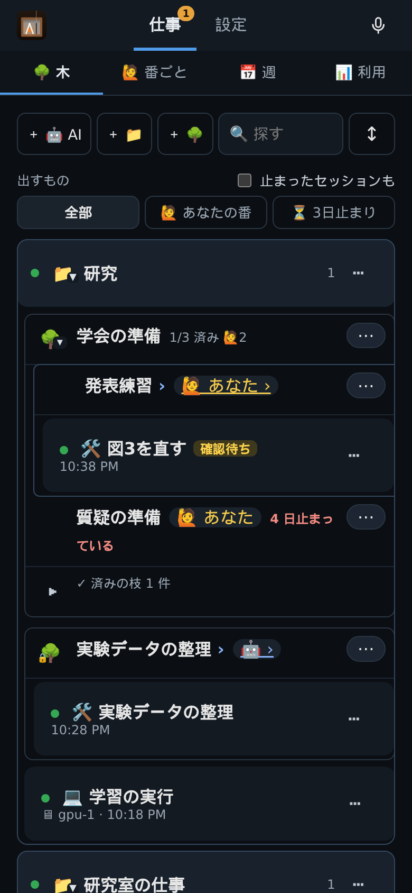
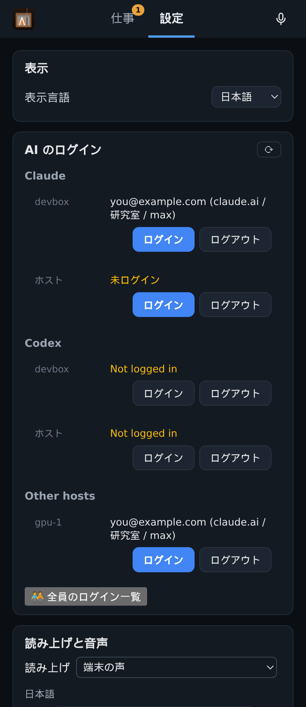
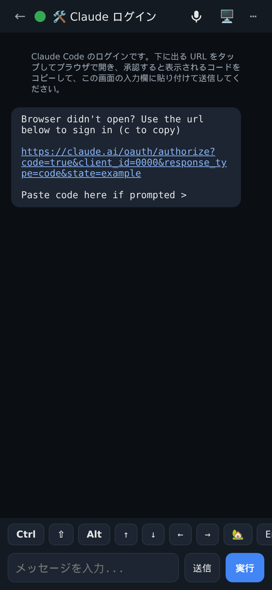
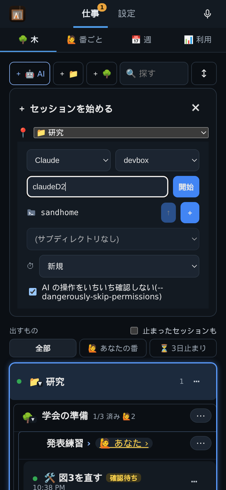
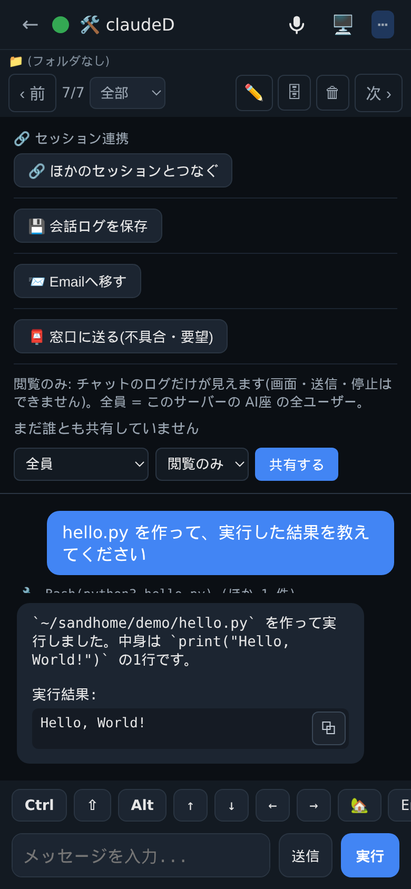
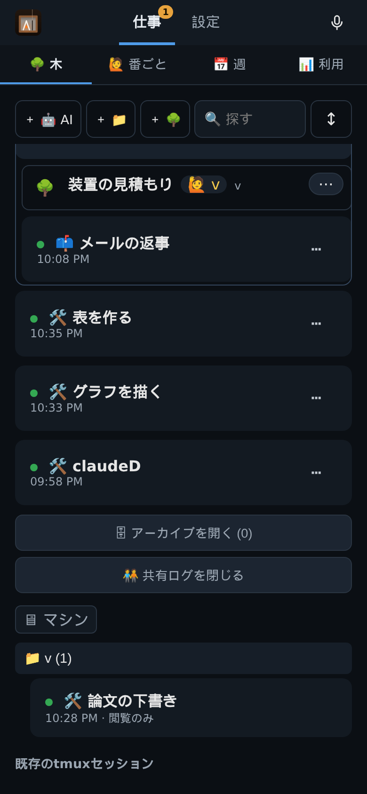
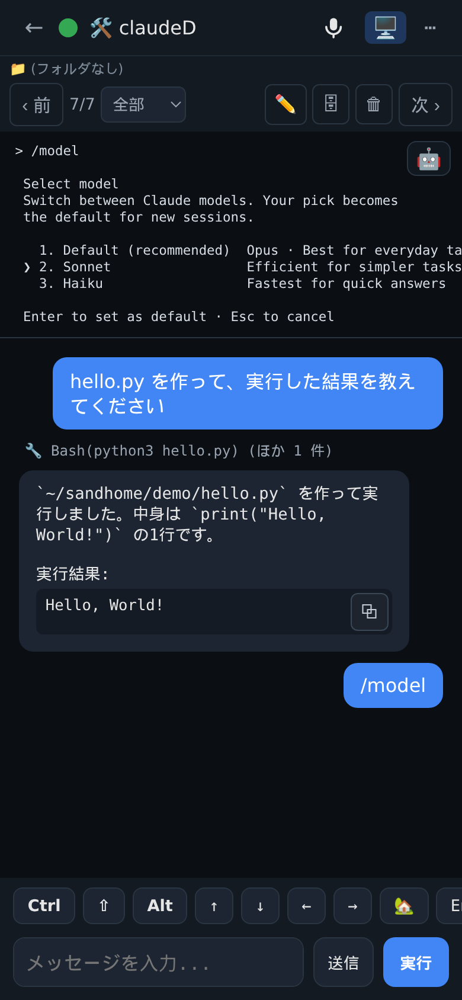
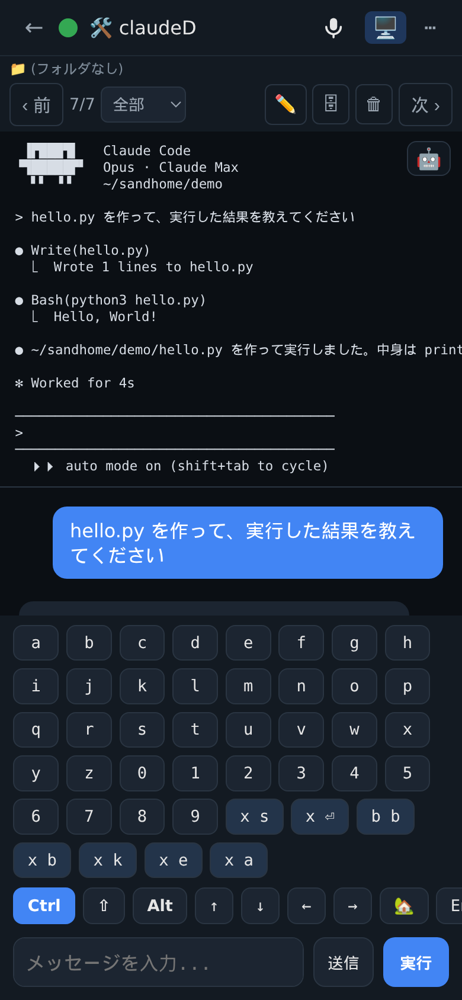
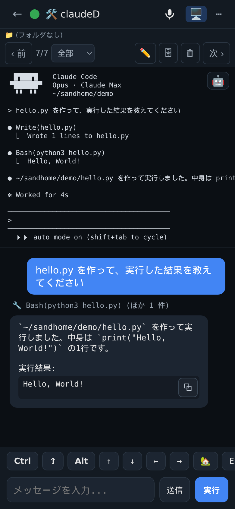

AI座 チュートリアル 基本編
スマホや PC のブラウザから、サーバー上の AI エージェント(Claude Code など)を使うための手引きです。基本編では、アカウントを作ってから、普段の AI コーディングができるようになるまでを説明します。サーバーごとに入っている機能が少し違うので、分からないところは管理者に確認してください。
AI座 は https://<サーバー>/ で開くチャット風の画面です。チャットに書いた指示は、サーバー上の自分専用のコンテナで動く Claude Code に届き、返事がチャットに戻ってきます。
フォルダと仕事の木・番ごと・巡回・通知・パスキー・ホストやルートのセッション・他のマシンなどは発展編にあります。
1. アカウントを作る
管理者が許可したドメインの Google アカウントがあれば、AI座 の画面から自分でアカウントを作れます(この機能を有効にしているサーバーの場合)。そうでなければ管理者に作ってもらいます。
- ブラウザで
https://<サーバー>/を開き、「Google でログイン」から許可されたドメインのアカウントを選びます。 - まだアカウントが無いと「アカウント作成」のフォームが出ます。ユーザー名を決めて送信します。
- 使える文字は英小文字・数字・
-・_。先頭は英小文字か_。32文字まで。 - あとから自分では変えられません。
- 使える文字は英小文字・数字・
- 送信すると SSH の秘密鍵が1回だけ表示されます。画面を閉じる前に必ず保存してください。二度と表示されません。
- これで AI座 が使えます。次回からは Google でログインするだけです。
SSH でも入れるようにする(パスキー登録に必要)
AI座 だけを使うなら SSH は不要です。ただし、mailbox やホストのセッションに使うパスキーの登録には SSH ログインが1回要るので、早めに済ませておくと楽です。使っている PC に合わせて、どちらかの手順で行います。
Mac・Linux、Windows の MSYS2(Git Bash も同じ)
# 自分の PC で: もらった鍵を保存して権限を絞る
mkdir -p ~/.ssh
mv ~/Downloads/id_ed25519_<ユーザー名> ~/.ssh/
chmod 600 ~/.ssh/id_ed25519_<ユーザー名>
# 初回ログイン。ログイン直後にパスワードの設定を求められる
ssh -i ~/.ssh/id_ed25519_<ユーザー名> <ユーザー名>@<サーバー>MSYS2 では ~ は MSYS2 のホーム(例: C:\msys64\home\<名前>)で、Windows のホーム(C:\Users\<名前>)とは別です。ダウンロードしたファイルは /c/Users/<Windowsの名前>/Downloads/ にあります。MSYS2 の ~/.ssh に置いた鍵は、PowerShell の ssh からは見えません。
Windows 標準の OpenSSH(PowerShell)
Windows 10/11 には ssh が入っています(無ければ「設定 → システム → オプション機能」で「OpenSSH クライアント」を追加)。PowerShell で次を実行します。chmod は使えないので、権限は icacls で絞ります。
# 鍵を C:\Users\<Windowsの名前>\.ssh\ へ移す
mkdir -Force $env:USERPROFILE\.ssh
Move-Item $env:USERPROFILE\Downloads\id_ed25519_<ユーザー名> $env:USERPROFILE\.ssh\
$key = "$env:USERPROFILE\.ssh\id_ed25519_<ユーザー名>"
# 自分以外が読めないようにする(継承を切り、自分だけに読み取りを許す)
icacls $key /inheritance:r
icacls $key /grant:r "$($env:USERNAME):(R)"
# 初回ログイン。ログイン直後にパスワードの設定を求められる
ssh -i $key <ユーザー名>@<サーバー>「UNPROTECTED PRIVATE KEY FILE」「bad permissions」と言われたら、icacls の2行を実行し直してください。PowerShell では -i ~/.ssh/... の ~ が展開されないことがあるので、$env:USERPROFILE で書いています。
パスワードは、この初回ログインで決めるまで誰にも使えない状態になっています。2回目からは同じコマンドで入れます。
毎回 -i を書かないようにする
次の内容を設定ファイルに書くと、ssh aiza だけで入れます。設定ファイルは、Mac・Linux・MSYS2 では ~/.ssh/config、Windows 標準では C:\Users\<Windowsの名前>\.ssh\config(拡張子なし)です。IdentityFile の ~ はどちらでも ssh が自分のホームに読み替えます。
Host aiza
HostName <サーバー>
User <ユーザー名>
IdentityFile ~/.ssh/id_ed25519_<ユーザー名>aiza-set-email you@example.com を1回実行してください。そのメールアドレスの Google アカウントでログインできるようになります。2. 画面の見方
AI座 の画面の上には3つのタブがあります。仕事(セッションと仕事の木)・新着(メールなどの新着まとめ。使っている人だけ)・設定です。セッションとは、サーバー上で動き続ける1つの作業場所(Claude Code やシェル)のことで、開くとチャットの画面になります。ブラウザで https://<サーバー>/ を開くと「仕事」が出ます。
仕事(トップ画面)

| 場所 | 意味 |
|---|---|
| ロゴ | AI座 とは(説明) |
| 仕事・新着・設定 | タブ。仕事の数字は「あなたの番」の数。タブの切り替えはブラウザの「戻る」では戻りません |
| 📖 | サーバーのドキュメントを読む画面(サーバーによっては無い) |
| マイク | 読み上げ・音声モード(発展編) |
| 🌳 木・🙋 番ごと・📅 週・📊 利用 | 仕事の見方。🌳 木はフォルダと仕事の木とセッション、🙋 番ごとは誰の番かで並べた一覧(発展編) |
| ＋ 🤖 AI | 新しいセッションを始める(3章) |
| ＋ 📁 / ＋ 🌳 | フォルダを作る / 新しい仕事(木)を作る。木の枝を選んでいるときは、その下に枝を足す |
| 🔍 探す | チャットの中身を検索 |
| ↕ | 並べ替え。行の左の ⠿ を引っぱって、フォルダや木の項目へ動かす(発展編) |
| ＋ や ↕ の下 | 押したボタンの入力欄が、上の段のすぐ下に開く。押したボタンは青い枠になる。同じボタンをもう一度押すか Esc で閉じる |
| 出すもの | 全部 / 🙋 あなたの番 / ⏳ 3日止まり。「止まったセッションも」で止まったセッションも出す |
| フォルダ・木の行 | 1回押すと選ぶ(枠が青く光る)。選んだ行をもう一度押すと開く・閉じる(📁 や 🌳 の右下の ▶/▼ を押しても開閉)。上の段の ＋ は、選んだフォルダや枝の中に作る |
| 📁・🌳 | 📁 はフォルダ、🌳 は仕事の木の根。右下の小さな印は ▶ 閉じている・▼ 開いている(木の ▽ は済んだ枝も出している)。🌳 の左下の 🔒 は誰とも共有していない木。入れ子は枠で囲んで示す。灰色の >_ の印はディレクトリ(サーバー上の場所。作業ディレクトリなど)で、aiza のフォルダとは別のもの |
| 名前の前のアイコン | セッションの場所。🛠️ devbox(普段の Claude など)、📫 mailbox、🏠 ホスト、🔒 ルート、💻 ssh でつないだ他のマシン(行の2行目に 🖥 マシン名) |
| 各行の ● | 緑は動いている、灰色は止まったセッション。緑をタップすると停止、青い輪の付いた灰色をタップすると続きから再開(どちらも確認が出ます) |
| 行の右の ⋯ | セッションは名前の変更・他のセッションとつなぐ・アーカイブ(一覧から隠すだけ)・削除。フォルダは名前の変更・作業ディレクトリ・フォルダごと共有・アーカイブ・削除(空のときだけ)。木の枝は済みにする・共有など(発展編) |
| 一番下 | 🗄 アーカイブ、🧑🤝🧑 共有ログ(人から共有されたセッション、4章)、🖥 マシン(Windows 機の黒板) |
仕事の木(あらまし)
仕事の木は、1つの仕事(例えば「学会の準備」)を枝(「発表練習」「質疑の準備」…)に分けて書き、枝ごとにいま誰の番か(🙋 人・🤖 AI・💤 待ち・✓ 済み)が見えるようにしたものです。人と AI が入り混じって進める仕事の、どこが止まっているかを見るために使います。
- どこにあるか: 仕事の 🌳 木の中で、🌳 の付いた行が木の根です(上の写真の「学会の準備」「実験データの整理」)。フォルダの中に置けます。作るのは上の段の「＋ 🌳」です。
- セッションとつながる: 枝にはセッションを結べます。結んだセッションは枝の下に出て、その枝の番はセッションの状態(返事待ち・作業中・済み など)で自動で変わります。枝を選んで「＋ 🤖 AI」で始めたセッションは、その枝に結ばれます。Claude はセッションの中から自分で枝を足したり済みにしたりもします。
- 木を共有すると: 木を見られる人は、木に結ばれた devbox のセッションを閲覧のみで開けます(自動で共有されます)。mailbox・ホスト・ルートのセッションは木では共有されないので、見せたいときは別に共有します(4章)。
枝の作り方、🧭 担当と 🤝 協力、木の共有の決め方などは発展編にあります。
設定

カードが縦に並びます: 表示(表示言語)、AI のログイン、読み上げと音声、通知(この端末に通知するか)、アカウント(ログアウト)。
最初に、AI のログインのカードで devbox の Claude にログインしてください(下の「Claude にログインする」)。ログインしていない場所では Claude が動きません。
チャット画面

| 場所 | 意味 |
|---|---|
← | 開いた元のタブへ戻る(画面を右へスワイプしても、ブラウザの「戻る」でも戻れます) |
| ● (名前の左) | 動いているか。緑ならタップで停止、灰色ならタップで続きから再開(確認が出ます) |
| マイク | 音声で入力する・読み上げ(発展編) |
| 🖥️ | ターミナル画面(画面パネル)を開く・閉じる。6章 |
| ⋯ | このセッションのメニュー: 🔗 ほかのセッションとつなぐ・💾 会話ログを保存・📨 Email へ移す・📮 窓口に送る(不具合・要望)・他の人との共有(4章) |
| 巡回の帯 | 見出しの下の帯。‹ 前・次 › で一覧の前後のセッションへ移る。✏️ 名前の変更・🗄 アーカイブ・🗑 削除もここ(発展編) |
| キーの列 | 左端に 📎(ファイル添付)、続いて Ctrl ⇧ Alt ↑ ↓ … 横にスクロールできます。5章 |
| 送信 / 実行 | 実行は Enter 付き、送信は Enter なし。5章 |
巡回の帯は初めから開いています。チャットの名前(🛠️ の右)をタップすると閉じ、もう一度で開きます。セッションはブラウザを閉じても動き続けます。一覧から開き直せば、そのまま続きを見られます。スマホでは「ホーム画面に追加」しておくと、返事が来たときに通知が届きます(iPhone ではこれが必須です)。
3. 普段の AI コーディングのしかた
普段は Claude を選んでセッションを作り、チャットで指示するだけです。Claude は自分専用のコンテナ(devbox)の中で、ファイルを作り、コマンドを実行します。
Claude にログインする(最初の1回)
Claude を使う前に、使う場所ごとに1回 Claude のアカウントでログインします。普段使う devbox の分は、最初に済ませてください。

- 上のタブの 設定 を押し、AI のログイン のカードを見ます。Claude の見出しの下に、場所ごとの行(devbox・ホスト、許可された人にはルート)があり、ほかのマシンがあれば Other hosts の下にマシンごとの行があります。
- 行の右には今の状態が出ます。ログインしていればアカウントのメールアドレス(と、認証の方式・組織・プラン)、していなければ黄色の「未ログイン」です。調べている間は「確認中…」、その場所を使えない人には「権限なし」と出ます。
- devbox の行の ログイン を押します。「Claude ログイン」というチャットが開きます。
- チャットに出る URL をタップしてブラウザで開き、使う Claude のアカウントでログインして承認します。
- 表示されたコードをコピーし、AI座 のチャットに戻って入力欄に貼り付け、実行。貼ったコードはチャットに出ませんが、それで正常です。
- 成功か失敗の1行が出て、ログイン用のチャットは一覧から自動で消えます。
←で設定に戻り、devbox の行にメールアドレスが出ていれば完了です。すぐに変わらなければ、見出しの横の ⟳ で取り直します。
- 場所ごとに別々: devbox・ホスト・ルート・ほかのマシンは、それぞれ別にログインします。ホストやほかのマシンで Claude を使うときは、その行でも同じ手順を行います(発展編)。
- ログインしていない devbox やホストで始めたとき: セッションの代わりにログインのチャットが開きます。上の 4〜6 を済ませてから、もう一度セッションを始めてください。
- 途中でやめたとき: 同じ場所のログインは一度に1つです。もう一度 ログイン を押すと、途中のログインのチャットがそのまま開きます。前に開いた別の URL で取ったコードは使えないので、そのチャットに出ている URL を開き直してください。
- アカウントを替える: その行の ログアウト(確認が出ます)のあと、ログイン し直します。
- Codex(ChatGPT のアカウント)も、同じカードの Codex の行から同じようにログインします。ただし向きが逆で、URL を開いたページに、AI座 のチャットに出ているコードを入力します。
- カードの一番下の 🧑🤝🧑 全員のログイン一覧 で、このサーバーの全員がどこでどのアカウントにログインしているかを見られます(見るだけ。ルートのログインは、ルートを解錠中の人にだけ出ます)。
セッションを作る

- 入れたいフォルダがあれば、先にその行を1回押して選びます(枠が青く光る)。仕事の木の枝を選べば、その枝の仕事をするセッションになります。
- 仕事の 🌳 木の上の段の ＋ 🤖 AI を押します。始める画面が上の段のすぐ下に開きます(もう一度 ＋ 🤖 AI か ✕ で閉じる)。
- 「何で」は Claude、「どこで」は devbox を選びます(最初からこの組み合わせになっています)。どこでには、ssh でつないだ他のマシンも並びます。
- 名前は初めから
claudeDのような候補が入っています(AI の名前と場所の1文字。同じ名前があれば番号が付く)。書き換えてもかまいません。 - 📍 置く場所には、選んだフォルダや枝が初めから入っています。ここで変えてもかまいません(何も選んでいなければ「フォルダに入れない」)。
- 灰色の >_ の印の行で作業ディレクトリ(サーバー上の場所)を選びます。最初は
sandhome(コンテナの中のホーム)です。「サブディレクトリを開く…」で1段ずつ下へ、↑で上へ、＋で今いる場所に新しいディレクトリを作れます。 - ⏱ の欄は普段は「新規」のまま。前の会話を続けたいときは、ここで選びます(下の「続きから」)。
- 「AI の操作をいちいち確認しない」は普段はオンのままでかまいません。コンテナの中なので、Claude がファイルを書き換えても外には影響しません。
- 開始を押すとチャット画面になります。チャットで「戻る」と、開いた元のタブに戻ります。
- Claude にまだログインしていない devbox やホストで始めると、代わりにログインの画面が開きます。ログインしてから、もう一度始めてください(上の「Claude にログインする」)。
指示を出す・結果を受け取る
- 入力欄に日本語で書いて 実行。スマホのキーボードの改行キーも実行と同じです(入力欄の中で改行したいときは Shift+Enter)。
- Claude が考えている間も、続けて指示を送れます。
- 手元のファイルを渡す: 📎 で選ぶ(いくつでもまとめて選べます)か、入力欄に貼り付けます。サーバー上に保存され、そのパスが入力欄に入るので、「このファイルを見て…」と続けて送ります。1ファイル 100MB まで。
- 画像やファイルを見せてもらう: 「結果のグラフをチャットに表示して」と頼むと、Claude が所定の場所に置き、チャットに画像やダウンロードのリンクが出ます。3D モデル(.glb など)はタップするとビューアが開きます。
後で続きをする
- セッションは動いたままなので、仕事の 🌳 木から開けば続けられます。使わないものは行の ⋯ (またはチャットの巡回の帯)の 🗄 でアーカイブすると一覧がすっきりします(アーカイブは一番下の「🗄 アーカイブを開く」で見られ、📤 で戻せます)。止まったセッションは初めは隠れていて、「止まったセッションも」で出ます。
- 停止: 緑の ● をタップして確認すると止まります。Claude には普段の終わり方と同じ Ctrl+C を2回送るので、会話は保存されます(裏で動いているコマンドがあれば止めます)。
- 再開: 止まったセッションの灰色の ● (青い輪付き)をタップして確認すると、同じフォルダで続きから再開します。同じセッションがそのまま続き、それまでのチャットも残ります。シェルの中で Claude を動かしていたセッションも、Claude の続きから再開します。
- セッションを削除しても、会話は残っています。新しく作るときに同じ作業ディレクトリを選び、⏱ の欄で日時と内容の要約から選ぶと続きから再開できます。
4. 他の人と共有する

- チャット画面の右上の ⋯ を押し、下の段で相手と種類を選んで 共有する。初めは 全員・閲覧のみ になっています。
- 閲覧のみ: 相手にはチャットのログだけが見えます。画面パネル・送信・停止はできません。全員 はこのサーバーの AI座 の全ユーザーです。
- 共同作業: 「ユーザーを指定」で名前を入れたときだけ選べます。相手もメッセージの送信・キー入力・停止ができます。ホストのセッションを共同作業で共有すると、相手はあなたの権限でコマンドを実行できます。
- ルートのセッションは閲覧のみでしか共有できません。mailbox のセッションは、名前を指定した相手にだけ共有できます(「全員」には出せません)。閲覧のみならチャットのログだけ、共同作業なら送信・停止までできます。外へ送る許可のカードに答えられるのは、あなただけです。
- やめるときは、パネルに並んだ相手の 解除 を押します。

人から共有されたセッションは、一番下の 🧑🤝🧑 共有ログを開く に入ります(アーカイブと同じく、初めは閉じています)。開くと持ち主ごとのフォルダ(📁)が並び、フォルダを開くとその人のセッションが出ます。閲覧のみのセッションを開くと入力欄は出ず、上に「〇〇さんの共有ログ(閲覧のみ)」と出ます。
フォルダごと共有することもできます(発展編)。
5. キー入力
送信と実行
| ボタン | 送るもの | 使うとき |
|---|---|---|
| 実行 | 文字 + Enter。入力欄が空なら Enter だけ | 普段の指示。選択メニューで今の項目に決めたいときは、空のまま実行 |
| 送信 | 文字だけ(Enter なし) | メニューが出ている最中に文字を入れたいとき、コマンドを途中まで打って Tab 補完したいとき |
キーの列(ソフトキーボード)

/model のメニューで ↓ を押したところ。❯ が動いたのは画面パネルでだけ見えます
- ↑ ↓ ← → Tab ⇧Tab Esc ⏎(Enter)⌫ Del 🏡(Home)End PgU PgD Spc はタップするとすぐ送られます。
- Ctrl ⇧ Alt は押しっぱなし扱いです。タップすると色が付き、次に押したキーと組み合わせて送られ、元に戻ります。Ctrl を押すと英数字のキーが現れます。
よく使う組み合わせ
| したいこと | 押すキー |
|---|---|
| Claude の作業を止める | Esc |
| シェルのコマンドを中断 | Ctrl → c |
| メニューの項目を選ぶ | ↑ ↓ で動かし ⏎(または空のまま 実行) |
| メニューを閉じる | Esc |
| Claude のモード(権限確認・計画モード)を切り替える | ⇧Tab |
| 前に送った指示を呼び出す | ↑ |
6. ターミナル画面とチャットの関係
サーバー上では、Claude やシェルは本物のターミナルの中で動いています。AI座 はその様子を2つの形で見せます。

- チャットは記録です。新しく出た出力が吹き出しとして順に積み重なり、あとで読み返したり、⋯ の中の 💾 で保存したりできます。
- 画面パネルは今の画面そのものです。選択メニューの ❯ が動く、進み具合の表示が変わる、といった「その場での書き換え」はチャットには出ないので、画面パネルで見ます。
- キーは両方に効きます。メニューが出たら画面パネルを開いて、キーの列で操作してください。
- 画面パネルをいちばん上までスクロールすると、過去に消えていった画面を遡れます。左上の「● ライブに戻る」で今の画面に戻ります。
- 右上の 🤖 は、Claude が裏で動かしているサブエージェントの様子です。
7. 困ったとき
| 症状 | 対処 |
|---|---|
| AI座 にログインできない | 許可されたドメインのアカウントを選んでいるか確認。管理者が作ったアカウントなら、SSH で aiza-set-email を実行(1章) |
| SSH が繋がらない・時間切れになる・知らないホストの鍵を聞かれる | SSH が内側のネットワークからだけのサーバーかもしれません。管理者が案内する方法で内側に入ってから SSH する(1章)。外から繋いで違う鍵を保存してしまったら、ssh-keygen -R <サーバー> で消す |
| Claude が何も返さない・ログインを求められる | 設定画面で、その場所の行が「未ログイン」(黄色)になっていないか確認してログイン(3章)。ログインしたのに動かないときは、カードの見出しの横の ⟳ で取り直し、別のアカウントになっていないかも見る |
| チャットが止まって見える | 🖥️ で画面パネルを開く。メニューや確認の質問で止まっていることが多いので、キーの列で答える |
| 実行したのに Claude が動かない(入力欄に文が残っている) | AI座 が数秒で気づいてチャットに ⚠ を出し、30秒ごとに Enter を送り直します。受け付けられると「受け付けました」と出ます。急ぐときは、文字を入れずに 実行 を押しても同じです |
| 画面を英語や中国語にしたい | 設定のタブの「表示」で選ぶ(発展編) |
| キーを押しても反応が見えない | チャットにはその場の書き換えが出ないため。画面パネルで確認する(6章) |
| mailbox やホストのセッションが「解錠」を求めて進まない | パスキーを登録したか、その端末で登録したかを確認(発展編)。施錠中の帯が出ていればタップ |
| Claude の作業を止めたい | Esc。セッションごと止めるなら、名前の左の緑の ● をタップして停止(会話は保存され、灰色の ● のタップで続きから再開できます) |
| 画面が古いまま | ページを再読み込みする(ホーム画面に追加したアプリなら、一度閉じて開き直す) |
| セッションがどこにあるか分からない | フォルダや仕事の木の枝の下かもしれません。📁 の行をタップして開く。止まったものは「止まったセッションも」で出ます。アーカイブした覚えがあれば、一番下の「🗄 アーカイブを開く」(発展編) |
| それでも分からない | 管理者に相談 |